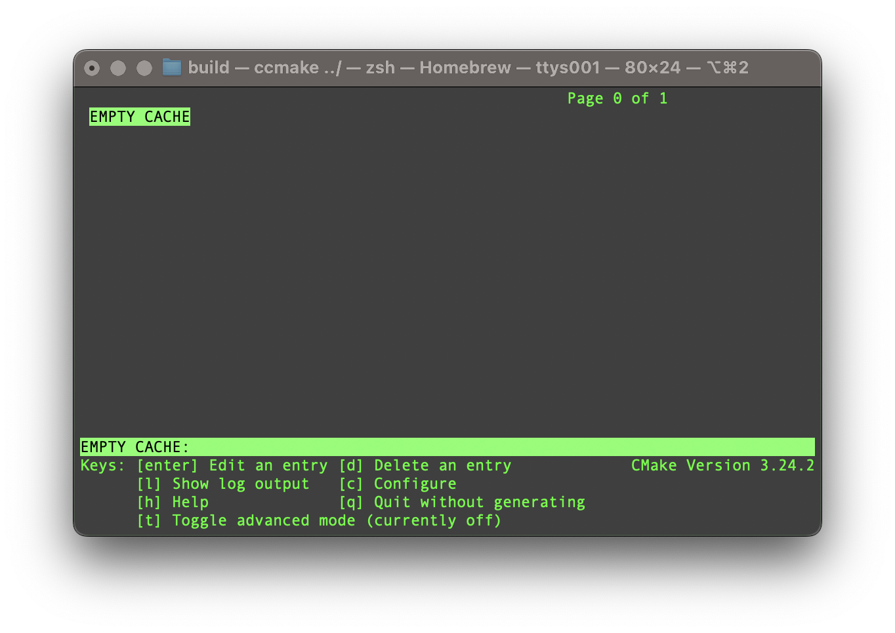

|
Stellarator-Tools
|
|
Stellarator-Tools
|
This is an umbrella project for the stellarator community tools. Currently available subprojects are.

To compile the code, first clone this repository.
A Stellarator-Tools directory will be created. In this directory create a build directory and navigate to it.
It's recommended that you use the ccmake to configure the build system. From inside the build directory, run the ccmake command
Initally, there will be no options.

press the c key to configure. Once configured, there will be several options. Different codes in the Stellarator Tools suite of codes can be configured to be built by toggling the BUILD_<CODE> from off to on. The build system will automatically turn on any dependencies. You can also set new options like the CMAKE_BUILD_TYPE.

After changing settings, keep pressing c until the g option appears.

After hitting g option ccmake will exit and a Makefile will be generated. The codes can be built using the make command.
If cmake fails to find the correct libraries, you may need to set the CMAKE_PREFIX_PATH variable to help locate them.